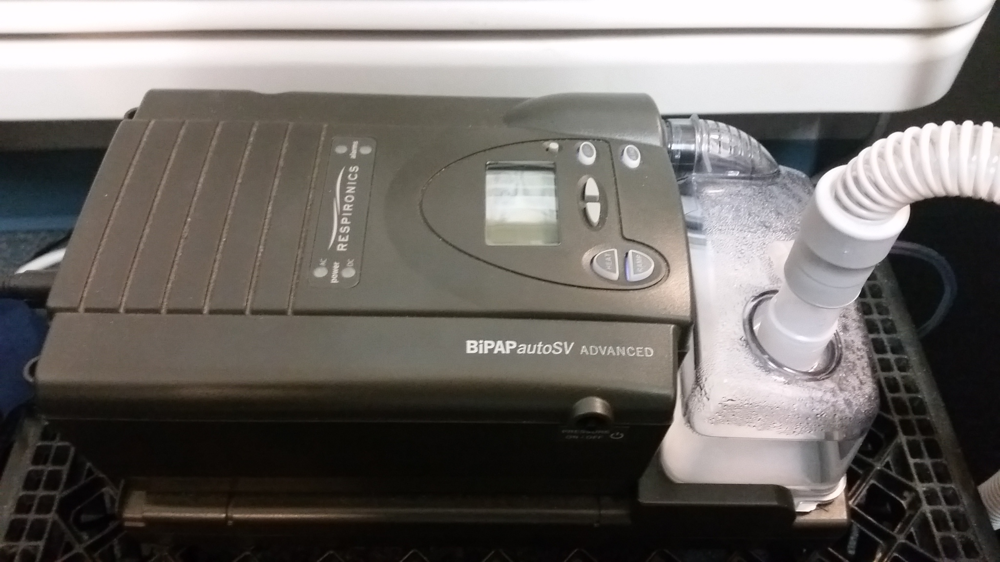
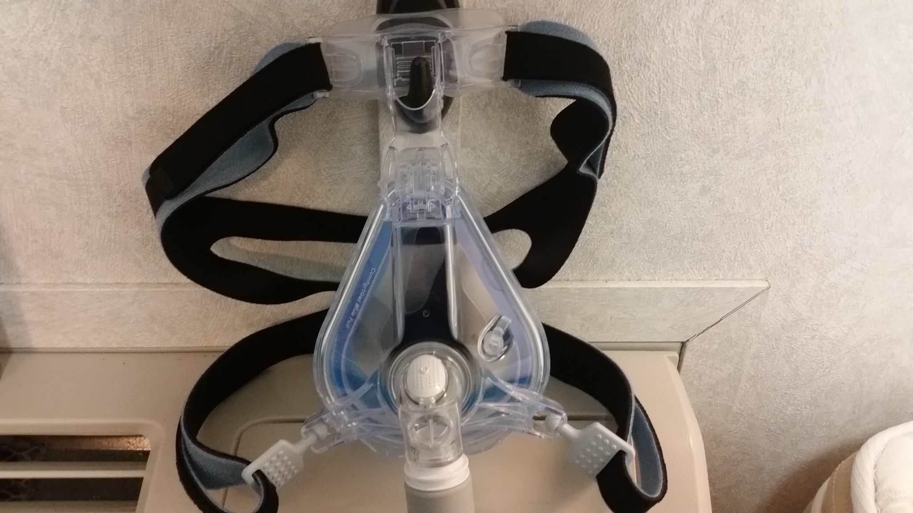
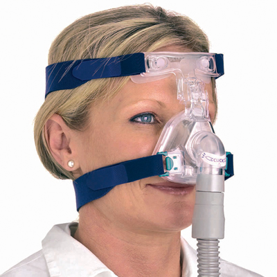
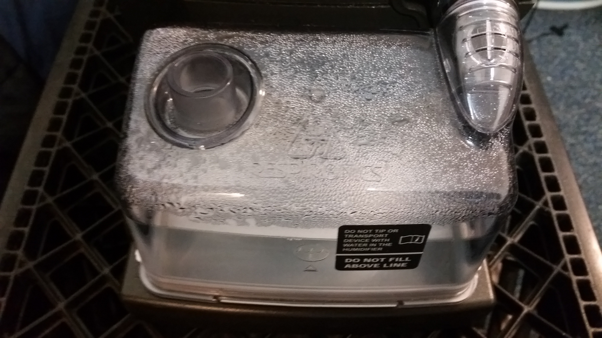
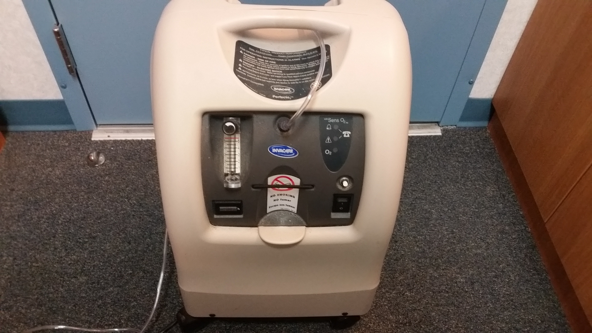

Treatment
At this point, your Sleep Specialist will have evaluated your condition, and determined that you are in neat of treatment. Your doctor will refer you to a Respiratory tech who will set you up with the necessary equipment needed for your treatment as well as train you to use it.
Some of the equipment you may use:
- CPAP Machine
- A CPAP Machine pushes air into your airway and creates positive airflow into your lungs. This keeps your airway from collapsing, which is a main cause of Sleep Apnea
- Full Face Mask
- A full face mask is used in conjunction with the CPAP machine to provide the air pressure. A full face mask covers both the mouth and nose. A Full Face Mask is typically used with people that sleep with their mouths open.
- Nasal Mask (image courtesy 1800cpap.com)
- A nasal mask is just like a full face mask, but is used in cases where the patient sleeps with his or her mouth closed
- Humidifier
- A humidifier can be used as an attachment to the CPAP machine. The humidifier is used when a CPAP is causing a severe drying of the nasal passage, and is commonly used with machines set for a very high pressure
- Oxygen
- In some cases, when a patient's Sleep Apnea is causing blood oxygen saturation to fall too low, a doctor may also prescribe supplemental oxygen to be bled into the CPAP's output.
{kind=link}
{kind=link}
{kind=link}
{kind=link}
{kind=link}
This list is certainly not definitive, as there is certainly more equipment that you may be prescribed or recommended.